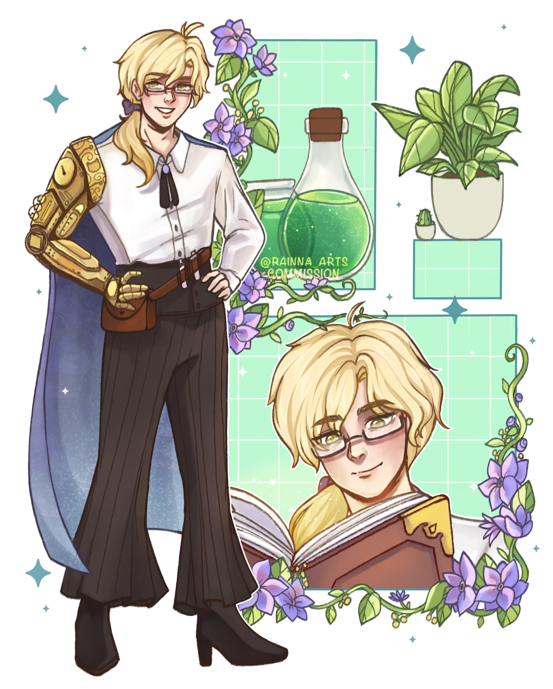
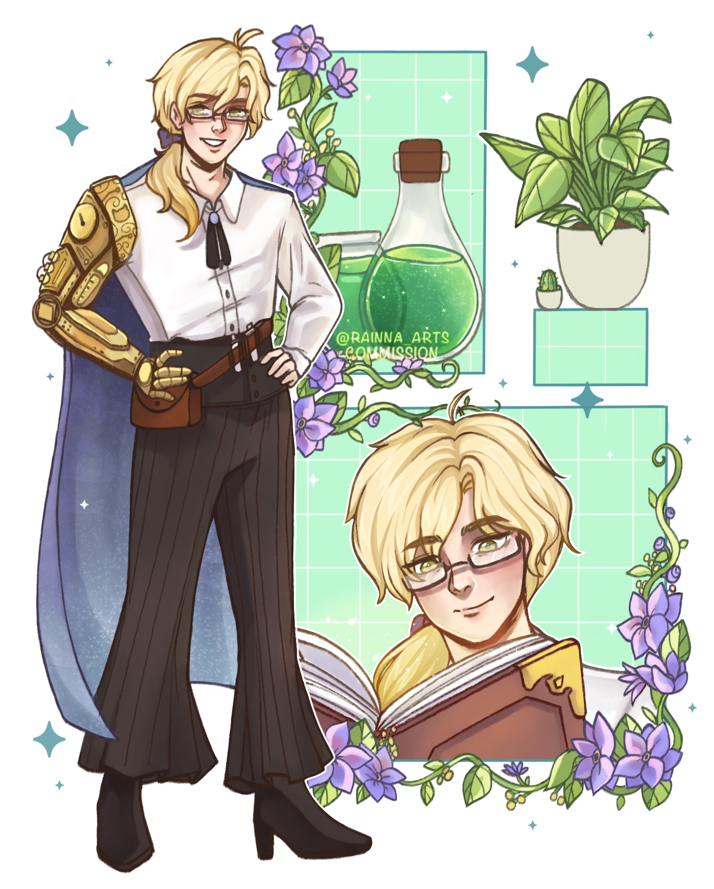

The annual Cromwell ball was in full swing, music and laughter spilling from every window of the grand manor. Reno shifted in his position among the shadows of the courtyard, already regretting accepting this assignment from the Guild. Guard duty was beneath his skills, even if it was for one of the most prestigious households in the Kingdom of Herad.
He'd been watching the nobles twirl and preen for hours, their jewels glinting like stars as they danced beneath crystal chandeliers. The Cromwell family certainly knew how to put on a show – everything dripped with wealth and power, from the golden fixtures to the elaborate alchemical displays that drew gasps of wonder from the guests.
But there was one notable absence that had the crowd buzzing with gossip: the family's genius son, Jean Cromwell, hadn't been seen at a social function in months. Reno had overheard at least three different theories about his whereabouts, each more outlandish than the last. Studying advanced alchemy in distant lands, one claimed. Secretly engaged to a foreign princess, whispered another. Trapped in an alchemical experiment gone wrong, theorized a third.
None of the gossips seemed to notice the tall, bespectacled man who occasionally slipped through the edges of the crowd, carefully observing before disappearing again. But Reno had. He'd been tracking the stranger's movements for the past hour, intrigued by his purposeful wandering.
A commotion from the east wing interrupted his surveillance. Raised voices, running feet, and... was that an explosion?
"Get back here, young master!"
"Like hell I will!" came an indignant reply, followed by another small blast that sent guards stumbling back in confusion. "I got what I came for, now leave me alone!"
A figure burst through the french doors onto the balcony - tall, blonde, dressed in formal attire that was now slightly singed at the edges. Even from a distance, Reno could see the man's face was flushed with exertion and anger as he looked frantically for an escape route.
The famous young master Cromwell, Reno realized. The genius alchemist he'd been watching all evening, though he hadn't known it at the time. Though none of the gossip had mentioned how striking he looked when thoroughly annoyed, hair wild and eyes blazing.
"ARGH! those mercs are way too energetic today," the man muttered, loud enough for Reno to hear. "Do they really want to catch me and bring me back to my family this badly?!"
He paced the balcony, running fingers through already disheveled golden hair. "Well, I guess in the first place attending a ball hosted by my family is a bad idea. Of course people would recognize me. I am way too good-looki-- ARGH!"
The self-aggrandizing speech cut off as he misstepped and stumbled, crying out in pain. Something fell from his coat – papers, Reno realized, covered in complex alchemical formulae. Jean scrambled to collect them, his movements hampered by what appeared to be a sprained ankle.
"Great. JUST GREAT. I shouldn't have attended this ball," he groaned, clutching his ankle. "But of course they'd keep Father's research notes here, the pretentious—"
"He stopped moving! Now's our chance!"
The mercenaries were closing in, their weapons drawn. These weren't the manor's regular guards, Reno noted. These men moved with professional precision, clearly hired specifically to capture the young master. The noble was cornered, injured, and - despite his earlier display - looking increasingly desperate.
Reno knew he should stay out of it. This was clearly a family matter, and interfering would only complicate things. He had a job to do, a reputation to maintain, a comfortable life working for the Guild.
But something in the man's expression, a flash of genuine fear beneath the bluster, had Reno moving before he could think better of it.
He scaled the balcony in three quick movements, scooped up the startled alchemist, and started running.
"Hey! Put me down!" The noble squawked indignantly, flailing in Reno's arms. "Wh- Do you even know who I am?! You'll get in trouble for helping m-"
"I really can't just leave you there and watch you," Reno cut him off, adjusting his grip as he vaulted over a low wall. His heart was racing, and not just from the exertion. "Don't worry, I'll bring you somewhere safe. You can leave after that. Just hold tight."
"This is completely undignified," Jean complained, though he made no actual attempt to escape. "I had a perfectly good plan for getting away."
"Did this plan account for your sprained ankle?"
"... I would have figured something out."
"Like what?" Reno couldn't help asking as he ducked them behind a hedge.
"Well, I have several experimental alchemical compounds that could—"
"Please tell me you're not carrying explosives while I'm holding you."
"Of course not!" Jean sounded offended. "They're not explosives, they're merely highly reactive catalysts for rapid molecular transformation that occasionally result in energetic decomposition—"
"Those are explosives."
"The terminology is completely different!"
"!!!"
Reno glanced down at his passenger, concerned by the sudden silence, only to find the young master's face had turned bright red. "Are you okay? Your face is red."
"WH- I'M FINE just. Just look forward, we might crash into something!" Jean clutched the papers to his chest with one hand, the other gripping Reno's shoulder perhaps a bit tighter than strictly necessary.
"I-I see..." Reno couldn't quite suppress his smile. Cute. Not a word he'd expected to associate with the infamous rebel son of House Cromwell, but there was something endearing about how quickly his haughty demeanor had crumbled into flustered indignation.
They made their escape through the manor's grounds, Reno's knowledge of the patrol routes proving invaluable. He took them through hidden paths and secret corners, always staying one step ahead of their pursuers. Jean gradually stopped protesting, though Reno noticed how he tensed at every sound of pursuit, how his breath caught whenever they had a close call.
"Why..." Jean asked during a quiet moment as they waited for a patrol to pass, "why are you helping me? You clearly work here, given how well you know the grounds."
Reno considered his answer carefully. "Let's just say I'm not fond of cages, golden or otherwise."
Jean's eyes widened behind his glasses, and something passed between them – recognition, understanding, a shared distaste for constraints.
Finally, in a secluded corner of the gardens far from the sounds of pursuit, Reno set his charge down carefully. The music from the ball was barely audible here, replaced by the gentle sound of crickets and rustling leaves.
"I'm sorry, I must've been heavy," the blonde said, suddenly seeming unsure of himself. He was still clutching the papers, Reno noticed, as if they were precious beyond measure.
"It's fine. I'm glad you're okay." Reno turned to leave, already wondering what excuse he'd give the Guild for abandoning his post.
"Wait! What's your name?"
Reno paused. He shouldn't answer. Shouldn't get any more involved than he already was. But... "It's Reno."
"Nice to meet you, Reno. Where are my manners? I forgot to introduce myself properly." He attempted a formal bow, only to wince and grab his ankle. "My name is Jean Cromwell, though I suppose you'd gathered that from all the shouting earlier."
"! You're the son of Duke Cromwell." As if Reno hadn't already known exactly who he was carrying. "The one they call the Golden Alchemist."
"Oh god, are they still using that ridiculous title?" Jean groaned. "I blow up ONE laboratory using gold phosphorus, and suddenly it's my trademark. Nobody talks about all the blue explosions I've made. Or the purple ones. I'm quite proud of the purple ones, actually—"
"I believe they were referring to your hair."
"... oh." Jean touched his reddish-gold hair self-consciously. "Well, that's far less interesting."
"Also. Please. Don't associate me with my family." Jean's expression darkened, then transformed into what had to be the most aggressively pleasant smile Reno had ever seen. "I hate them."
"I-I'm sorry. So, is the reason why they're chasing you is..?"
"They want me back, but I am SOOO tired of them telling me what to do. Can't they even prove their oh-so noble alchemist blood without me?" Jean started muttering, his hands moving animatedly. "Always 'Jean do this' and 'Jean make that' and 'Jean stop experimenting with volatile compounds in the dining room' and 'Jean you must uphold the family legacy' and—" He caught himself, adjusting his glasses sheepishly. "Ah, I'm sorry for rambling on."
Reno opened his mouth to say it was fine, to make his exit, to end what was already too much involvement in noble family drama. Instead, he found himself caught in Jean's gaze as the alchemist suddenly seized his hands.
(His eyes are shining.. Why do I feel like I'm about to hear something ridiculous)
"Please... Wait."
"I've taken a liking to you."
Reno blinked, thrown by the direct statement. But Jean wasn't finished.
"Would you like... to work together as partners?"
"Partners?" Reno repeated, bewildered. "You don't even know what I do."
"You're a mercenary, aren't you? Working for the Guild, given your training, but not particularly happy about being assigned to guard duty." Jean's eyes sparkled with intelligence. "You're skilled – your movements earlier proved that. You know these grounds perfectly, suggesting extensive reconnaissance work. And you have a strong moral compass, or you wouldn't have helped me."
Reno stared at him, impressed despite himself. "You got all that just from our brief encounter?"
"I am a genius," Jean said with absolutely no modesty, before his expression softened into something more genuine. "And... you're interesting. Most people who know who I am either want to use my talents or return me to my family. You just... helped. Even though it complicated things for you."
Standing there in the moonlit garden, holding hands with a noble's runaway son who'd just proposed they become partners mere minutes after meeting, Reno knew he should say no. Should walk away. Should return to his sensible life of taking straightforward jobs from the Guild.
But looking into those earnest, brilliant eyes, seeing the way Jean clutched those stolen research notes like they were his ticket to freedom, Reno found himself wondering how much trouble one genius alchemist could really be.
"Your ankle," he said instead of answering. "Can you walk?"
Jean tested it gingerly. "I'll manage. Though..." He glanced up at Reno through his lashes, a hint of mischief in his smile. "I wouldn't object to further assistance."
"You're going to be impossible to work with, aren't you?"
"Me? Impossible?" Jean pressed a hand to his chest in mock offense. "I'll have you know I'm merely highly particular about certain things. Like proper laboratory safety protocols."
"The ones about not carrying explosives?"
"Those are more like... guidelines. Very flexible guidelines." Jean's expression turned earnest. "But I am excellent at teamwork! Just ask any of my former research partners!"
"And where are they now?"
"Ah." Jean coughed delicately. "Perhaps that's not the best reference. But I promise I've grown as a person since those minor laboratory incidents. And you seem much more durable than most academics."
"Is that supposed to be reassuring?"
"Is it working?"
"Strangely, yes." Reno found himself fighting back a smile. "Though I'm already regretting this."
"Is that a yes?" Jean's eyes lit up with that dangerous sparkle again.
Reno sighed, but he was already moving to support Jean's weight. "Let's find somewhere safe first. Then we can discuss terms of this... partnership." He paused. "And establish some ground rules about experimental alchemy."
"Oh, wonderful! I have several theories about combining mercenary combat techniques with alchemical enhancement that I've been dying to test—"
"Rule number one: No using me as a test subject."
"But—"
"No."
Jean's brilliant smile lit up the night. "I know just the place! There's a fascinating old cathedral in Norbury that's said to house some unique alchemical manuscripts—"
"No heists until your ankle heals."
"But—"
"No."
They bickered quietly as they made their way into the night, leaving behind the glittering ball and its golden cage. Neither of them knew it yet, but this was the beginning of something extraordinary – a partnership that would grow into love, a chance encounter that would lead to family, a moment that would change both their lives forever.
(As it turned out, the amount of trouble one genius alchemist could be was: quite a lot. But that's another story.)


 
